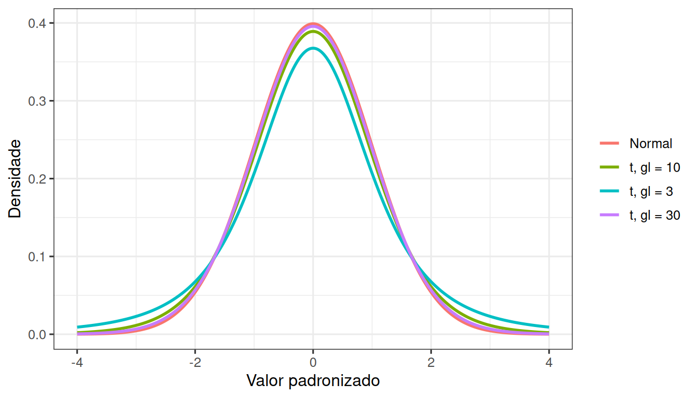
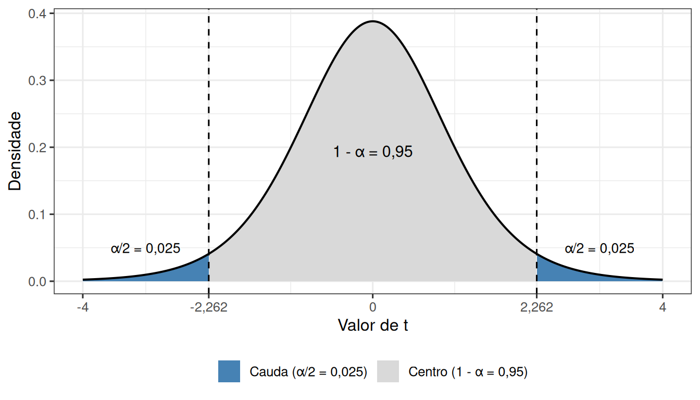
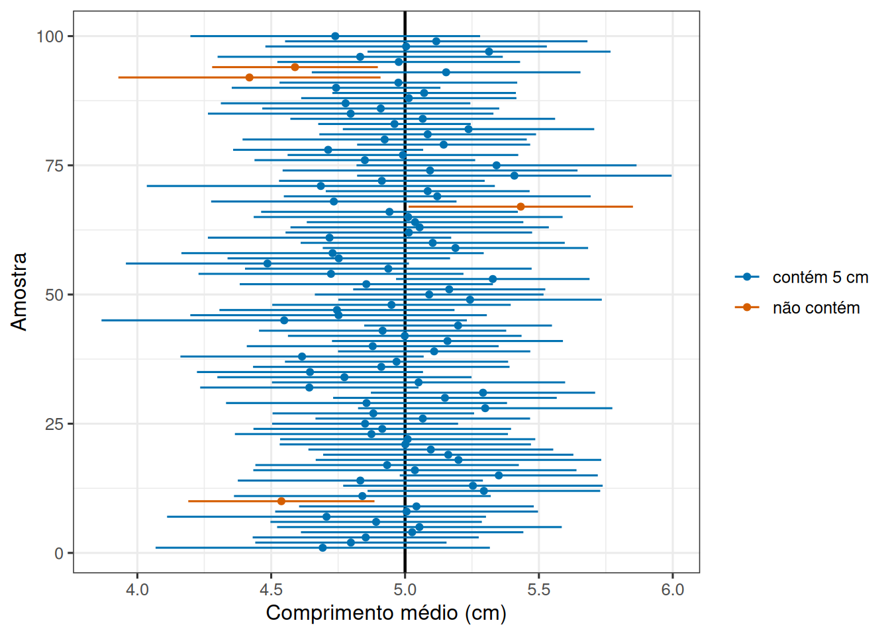
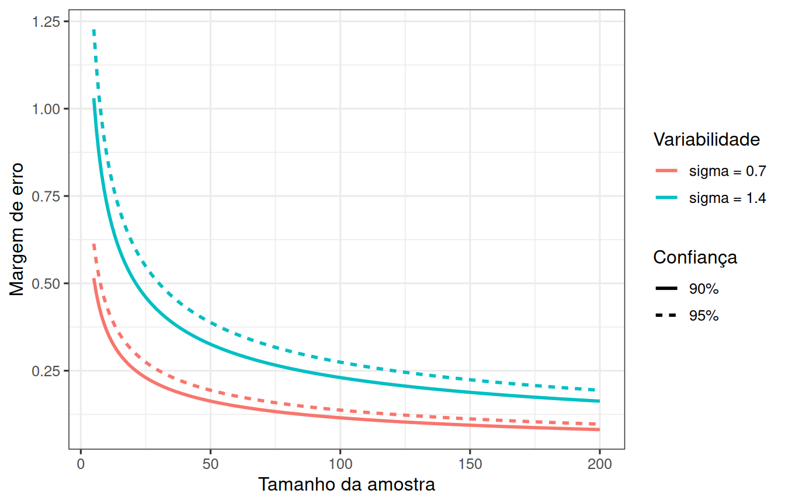

Quanta confiança cabe numa única amostra?
Leitura prévia
1 Você tem uma amostra, não duas mil
Uma equipe coleta 20 mexilhões de um costão, mede um por um e calcula a média de 4,9 cm.
Sabemos que esse número não é o comprimento médio do costão. Se outra equipe repetisse o trabalho, chegaria a outro valor, e a coleção dessas respostas possíveis tem uma largura própria. O problema prático é que ninguém repete o trabalho duas mil vezes. Você tem apenas uma coleta e um número médio, e precisa informar alguma coisa sobre o grau de confiança que tem nesse valor.
A pergunta desta leitura é como medir o espalhamento de um procedimento que foi executado uma única vez?
2 O erro padrão
A saída é extrair da própria amostra a informação necessária, contida na expressão a seguir.
\[s_{\bar{x}} = \frac{s}{\sqrt{n}}\]
onde \(s\) é o desvio-padrão dos valores da amostra e \(n\) é o número de unidades amostrais.
Esse número é o erro padrão da média. Ele estima o quanto a média iria variar se o estudo fosse repetido muitas vezes. O subscrito lembra de qual quantidade estamos medindo o espalhamento, a média \(\bar{x}\), e não os indivíduos.
Repare no que a fórmula diz. O erro padrão cresce com o valor de \(s\), ou seja, quando os indivíduos variam mais entre si. Portanto, quanto mais heterogêneo o costão, mais instável a estimativa. Por outro lado, o número cai quando a amostra \(n\) aumenta, proporcionalmente à raiz de \(n\). Isso tem uma consequência prática. Para reduzir a incerteza pela metade é preciso quadruplicar a coleta. Deste modo, aumentar ainda mais o tamanho de uma amostra que já é grande tem pouco efeito sobre a redução do \(s_{\bar{x}}\).
3 De um número para um intervalo
Se a média de uma amostra quase nunca acerta o valor da população, informar só a média não é suficiente. É necessário informar também uma faixa de valores que seja compatível com o que foi observado.
O intervalo de confiança tem esse papel e pode ser calculado pela expressão a seguir.
\[IC = \bar{x} \pm t \times s_{\bar{x}}\]
Assim, o \(IC\) encolhe quando a amostra cresce e se alarga quando os indivíduos variam mais. Falta explicar o que significa o multiplicador \(t\), que depende do nível de confiança escolhido e do tamanho da amostra.
3.1 O que é a distribuição t?
Se o desvio-padrão populacional \(\sigma\) fosse conhecido, a média padronizada seguiria a distribuição normal e o intervalo seria \(\bar{x}\pm z_{1-\alpha/2}\sigma/\sqrt n\). Na prática, substituímos \(\sigma\) pelo desvio-padrão amostral \(s\), e essa segunda estimativa introduz uma incerteza adicional, sobretudo em amostras pequenas. Usar \(z\) enquanto se substitui \(\sigma\) por \(s\) ignora essa incerteza e produz intervalos estreitos demais.
A distribuição t de Student existe para incorporar essa incerteza adicional, por meio de caudas mais largas que as da distribuição normal, como mostra a Figura 1. Para uma amostra de \(n\) unidades, os graus de liberdade são \(gl=n-1\). Perdemos um grau de liberdade porque os desvios em relação à média amostral precisam somar zero. Com poucos graus de liberdade, o intervalo fica mais largo. Conforme \(n\) cresce, \(s\) se estabiliza e a distribuição t se aproxima da normal.
Na Figura 1, a curva com três graus de liberdade tem pico mais baixo e caudas mais longas, enquanto a curva com trinta graus de liberdade é quase indistinguível da normal. Convém lembrar que uma densidade não atribui probabilidade a um ponto isolado. Probabilidades são áreas sob a curva. No intervalo bilateral, \(t_{1-\alpha/2,n-1}\) deixa área \(\alpha/2\) em cada cauda e área \(1-\alpha\) entre os dois valores críticos.
Com isso, a fórmula geral do intervalo bilateral de confiança \(100(1-\alpha)\%\) para a média fica completa.
\[ \bar{x}\pm t_{1-\alpha/2,\,n-1}\frac{s}{\sqrt{n}}. \]
O termo à direita de \(\bar{x}\) é a margem de erro \(E = t_{1-\alpha/2,\,n-1}\frac{s}{\sqrt{n}}\). Em um intervalo de 95% de confiança, \(\alpha=0,05\) e cada cauda da distribuição fica com 0,025. A largura total do intervalo é duas vezes a margem de erro.
Para fixar essas ideias com números concretos, considere uma amostra de \(n=10\) observações (\(gl=9\)) e um intervalo de 95% de confiança (\(\alpha=0,05\)). A Figura 2 mostra os valores críticos \(\pm t_{0{,}975,\,9}\), que dividem a densidade em três áreas. A região central concentra 95% da probabilidade, e as duas caudas ficam com 2,5% cada uma.

3.2 O cálculo do intervalo de confiança
Vale executar a fórmula uma vez de maneira explícita, porque cada linha do código corresponde a um dos elementos discutidos acima.
Cálculo do intervalo de confiança em R
comprimentos <- c(4.2, 5.0, 5.1, 4.7, 5.4, 4.8, 5.3, 4.9)
n <- length(comprimentos)
media <- mean(comprimentos)
erro_padrao <- sd(comprimentos) / sqrt(n)
critico <- qt(0.975, df = n - 1)
margem_de_erro = critico * erro_padrao
c(
media = media,
margem_de_erro = margem_de_erro,
ic_inferior = media - margem_de_erro,
ic_superior = media + margem_de_erro
) media margem_de_erro ic_inferior ic_superior
4.9250000 0.3151953 4.6098047 5.2401953 Nesse exemplo, \(n=8\) e \(gl=7\). O código calcula \(\bar x\), depois \(s/\sqrt n\), consulta o quantil de t e finalmente soma e subtrai a margem. O comando t.test(comprimentos)$conf.int aplica exatamente a mesma lógica. A conta manual é útil porque deixa visível o papel separado de variabilidade, tamanho amostral e nível de confiança. Alterar 0.975 para 0.95 produziria um intervalo bilateral de 90%, pois sobrariam 5% em cada cauda. Alterar apenas o número sem repensar a área é uma fonte comum de erro.
4 O que o intervalo a 95% significa?
O intervalo de confiança é um procedimento que, aplicado repetidamente, tem como objetivo acertar os limites da média populacional \(\mu\) com uma probabilidade conhecida.
Para ilustrar isso, vale fazer uma simulação computacional que não seria possível reproduzir na vida real. Vamos inventar um costão cujo comprimento médio de mexilhões seja \(\mu = 5\) cm, com desvio padrão \(\sigma = 1\) cm, repetir a coleta cem vezes, calcular o intervalo de 95% de confiança para cada uma das cem coletas e comparar os limites de cada intervalo com o valor de \(\mu\).

Note na Figura 4 que, na maior parte das vezes em que calculamos o intervalo de confiança para uma determinada coleta, o valor verdadeiro da população está abrangido entre os limites superior e inferior, o que está ilustrado em azul. Alguns intervalos (laranja), no entanto, estão acima ou abaixo de \(\mu\). Nesta simulação, o número de intervalos que não contêm o valor real foi 6, de 100. Se repetíssemos isso indefinidamente, cerca de 95% dos intervalos conteriam a média da população, e 5% não a conteriam. É por isso que o procedimento se chama “intervalo de 95% de confiança”.
A média amostral nos dá uma estimativa pontual, enquanto o intervalo de confiança nos dá uma estimativa intervalar. Um intervalo estreito e um intervalo largo em torno do mesmo valor dizem coisas muito diferentes sobre o que o estudo conseguiu estabelecer, e nenhuma delas aparece quando se informa apenas a estimativa pontual. Um intervalo largo não é um resultado ruim. É apenas um resultado honesto sobre um estudo pequeno ou sobre uma população muito heterogênea.
5 Antecipando a precisão desejada
Convém saber o que controla a largura do intervalo. Sua expressão mostra que há três maneiras de reduzi-lo. A primeira é reduzir o valor crítico de t, o que reduz o nível de confiança. A segunda é aumentar \(n\), o que estreita o intervalo proporcionalmente a \(\sqrt{n}\). A terceira é reduzir o desvio padrão amostral \(s\), o que reduz o erro padrão.
Dessas três, somente as duas primeiras estão sob o controle do pesquisador, que pode definir tanto o valor crítico que deseja adotar quanto o tamanho \(n\) da amostra. A magnitude do desvio padrão é uma propriedade das unidades amostrais, no exemplo dos mexilhões, uma propriedade dos comprimentos individuais.
Sabendo disso, podemos inverter o problema e planejar a coleta. Se desejamos uma margem de erro \(E\) e temos uma estimativa prévia de \(\sigma\), um primeiro planejamento usaria a expressão a seguir.
\[ n\approx\left(\frac{z_{1-\alpha/2}\sigma}{E}\right)^2, \]
para pré-determinar o tamanho amostral necessário para atingir essa margem de erro. O valor de \(\sigma\) pode vir de literatura comparável ou de um estudo piloto. A fórmula supõe observações independentes e funciona como ponto de partida para entender valores de \(n\) desejáveis e possíveis de se obter na prática.

Na Figura 5, todas as curvas caem rapidamente no início e depois quase estacionam. Por exemplo, com \(\sigma=1{,}4\) cm, confiança de 95% e margem de erro desejada de 0,25 cm, a fórmula fornece \(n\approx(1{,}96\times1{,}4/0{,}25)^2=120{,}5\), portanto planejamos pelo menos 121 unidades. Se o estudo piloto tiver poucas unidades, sua estimativa de \(\sigma\) também é incerta e uma escolha prudente seria testar valores de \(\sigma\) acima e abaixo para entender o efeito sobre o \(n\) a ser adotado.
Quando a amostra representa fração grande de uma população finita, a correção populacional pode reduzir o tamanho necessário. Quando fazemos amostragem por conglomerados (por exemplo, sorteando algumas praias e aumentando o número de unidades em cada uma), ocorre o contrário. A semelhança entre unidades do mesmo grupo aumenta o tamanho \(n\) exigido. A estratégia de amostragem e de seleção das unidades, portanto, têm efeito sobre a precisão do experimento e precisam ser consideradas no planejamento.
6 Quando o procedimento é confiável
Toda essa construção repousa sobre pressupostos. O intervalo t para a média, por exemplo, supõe unidades independentes, seleção compatível com a população de interesse e ausência de distorções graves. Com amostras pequenas, assimetria forte e valores extremos podem comprometer a cobertura efetiva. Com amostras maiores, o Teorema Central do Limite torna o procedimento mais robusto, mas não corrige viés de seleção, pseudorreplicação nem erro sistemático de medição.
Antes de interpretar um intervalo, portanto, convém verificar se a população está definida e a amostra a representa, se as unidades são coerentes com o desenho adotado e se são selecionadas de forma independente, se o formato da distribuição é altamente assimétrico, qual é o efeito de valores extremos e se a estimativa de variabilidade é coerente. Planejar um experimento passa por compreender como esses elementos interferem na precisão e acurácia do estudo.
Há ainda uma distinção que costuma passar despercebida entre intervalo de confiança da média e intervalo de previsão para uma unidade. O primeiro estima um centro populacional e encolhe com \(n\). O segundo precisa incluir a variação dos próprios indivíduos e, por isso, é muito mais largo. Confundir os dois transforma uma afirmação precisa sobre uma média em uma previsão excessivamente otimista sobre o próximo organismo.
A pergunta inicial pedia que medíssemos o espalhamento de um procedimento executado uma única vez. Esse espalhamento depende do erro padrão que traduz a variabilidade observada na amostra em variabilidade esperada da estimativa e do intervalo de confiança, que transforma esse número em uma faixa cuja taxa de acerto é conhecida a longo prazo.